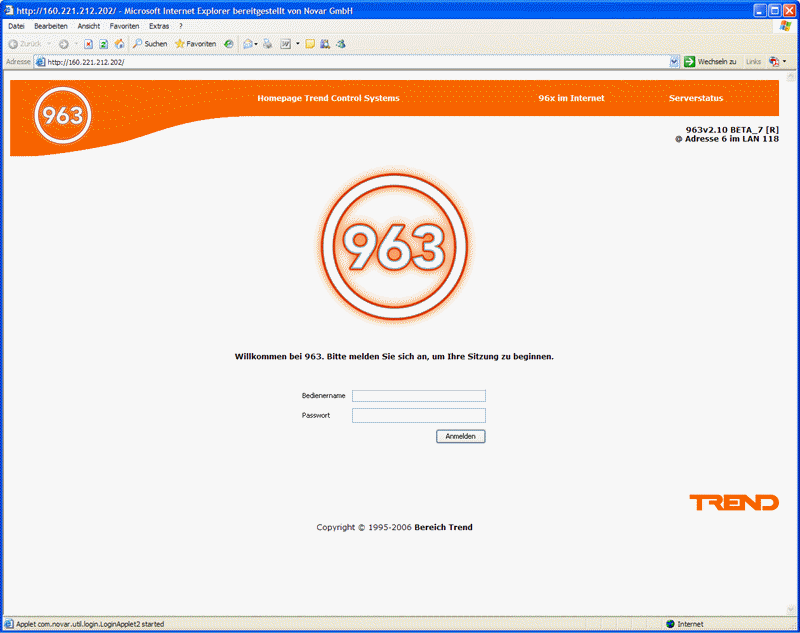

Eine Verbindung zum 963 Server kann von überall aus aufgebaut werden, vorausgesetzt, es kann eine TCP/IP-Verbindung zum 963 Server hergestellt werden.
Je nachdem, welcher Browser oder welches Gerät als Client benutzt wird, kann der 963 Server in zwei Betriebsarten betrieben werden: Grafikmodus und Textmodus. Auf einem PC laufende 963 Clients können beliebig konfiguriert sein, vorausgesetzt, sie verwenden das TCP/IP-Netzwerkprotokoll, eine Ethernet-Karte und einen Web-Browser. Für eine umfassende Grafikfunktionalität (Grafikmodus) sind Internet Explorer 6.0 oder höher (empfohlen), Netscape 6.1 oder höher bzw. Mozilla 1.4 oder höher (Internet Explorer 6 oder höher empfohlen) sowie die SUN JAVA Runtime Enviroment 1.5 oder höher erforderlich. Andere Browser zeigen nur Text an (Textmodus). PDAs mit Windows Mobile 2003 Second Edition oder höher, das Nokia 9210i und Smartphones mit Windows Mobile 5 oder höher können nur im Textmodus auf den Server zugreifen.
Beachten Sie, dass die 963 nicht mit allen Geräten getestet wurde und Trend auch daher nicht für die Kompatibilität eines bestimmten Geräts mit dem 963 Server garantieren kann.
Es gibt Unterschiede zwischen den beiden Modi.
So stellen Sie die Verbindung zum 963 Server her:
1 Starten Sie den Web-Browser.
2 Geben Sie die URL des 963 Servers ein. Wenn die 963 für den Einsatz mit einem anderen TCP/IP-Port als Port 80 eingerichtet wurde, müssen Sie die Portnummer durch ein Doppelpunkt getrennt angeben (z.B. http://Trend 963:6000).
Hierbei handelt es sich um die IP-Adresse oder den Namen des PCs, auf dem der 963 Server läuft. Anschließend erscheint die folgende 963 Server-Standardseite.

Tipp: Eventuell hat der Systemtechniker eine Verknüpfung erstellt, mit der sich Schritt 1 und 2 durch einfaches Anklicken ausführen lassen.
Beachten Sie, dass eventuell eine andere Seite angezeigt wird, falls dies vom Systemtechniker so eingerichtet wurde.
3 Wenn Sie einen ungültigen Bedienernamen und ein ungültiges Passwort eingeben, wird eine Informationsseite angezeigt.
Sollten beim Verbindungsaufbau zur 963 Probleme auftreten, erscheint eine Fehlermeldung; diese Meldungen werden im Abschnitt Fehlermeldungen in dieser Anleitung erläutert.